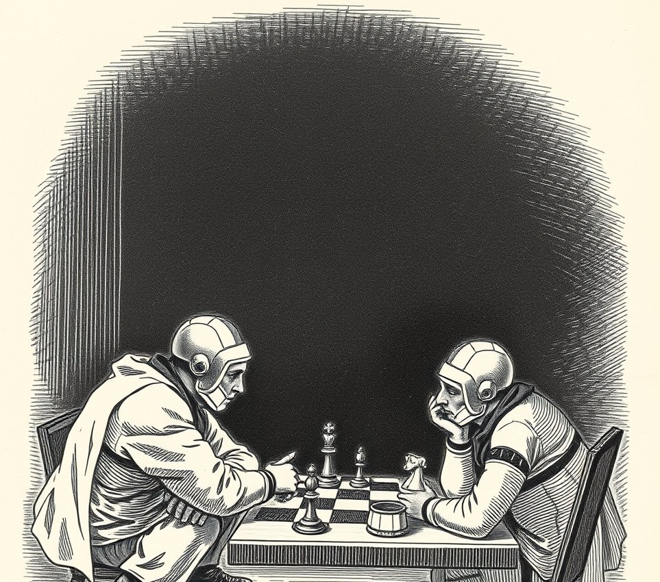

Port Low-G, Vesta . 28 March 2154

PORT LOW-G, VESTA -- The Solar Inland Revenue has ordered a recently revived ice-miner to pay seven years of accrued back-taxes, ruling that his period of total biological brain death constituted an unregistered offshore tax shelter.
Tariq Osei, 44, was declared legally dead in 2147 following a catastrophic breach of his mining rig near the Kuiper belt. His frozen remains drifted through deep space for eighty-four months before a salvage crew recovered his cryo-preserved core and initiated standard neural reconstruction. Upon awakening at Port Low-G General Hospital last Thursday, Mr Osei was handed a clean bill of health alongside a demand for 184,000 credits in back income tax, interest, and late-filing surcharges.
In a landmark judgment delivered yesterday, the Revenue Board concluded that while Mr Osei was functionally deceased, his biological absence from sovereign jurisdiction allowed his private investment accounts to grow without standard capital gains deductions. The board classified his seven-year state of cardiac arrest as an unauthorised non-domiciled tax holiday.
Physical demise without prior written administrative notification cannot be used as a loophole to evade civic duties, chief tax assessor Premila Sundaram stated during the hearing. Mr Osei failed to submit annual declarations of non-existence, nor did he apply for a post-mortem tax exemption before entering the void. Dying in international space is, for all intent and purpose, a classic tax minimisation strategy.
Counsel for Mr Osei argued that a crushed thorax and zero brain activity rendered him temporarily incapable of completing his annual tax returns. The court rejected the defence, noting that Mr Osei's automated bank accounts continued to collect interest while he was clinically dead, proving he retained active economic agency.
Mr Osei has been ordered to resume shifts at the ice-drills immediately to pay off the balance. The Revenue Board confirmed that should he die on the job again, his payroll tax deductions will continue automatically until his estate is fully settled.